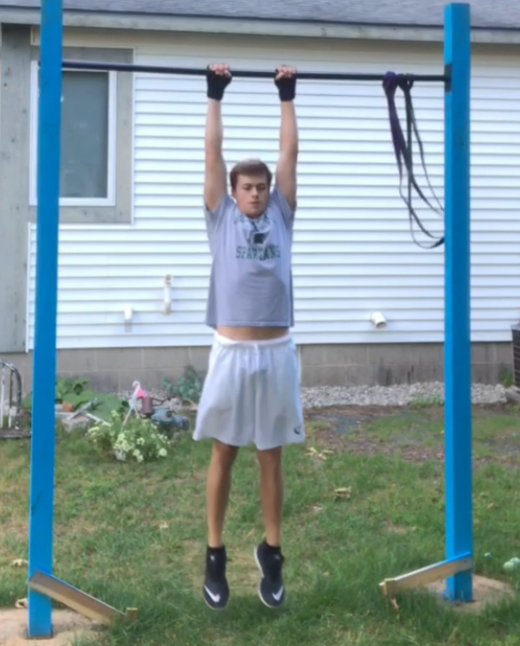
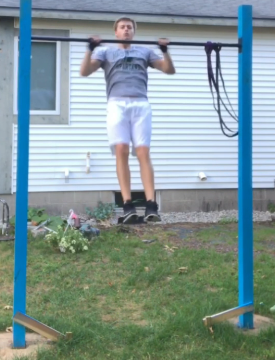
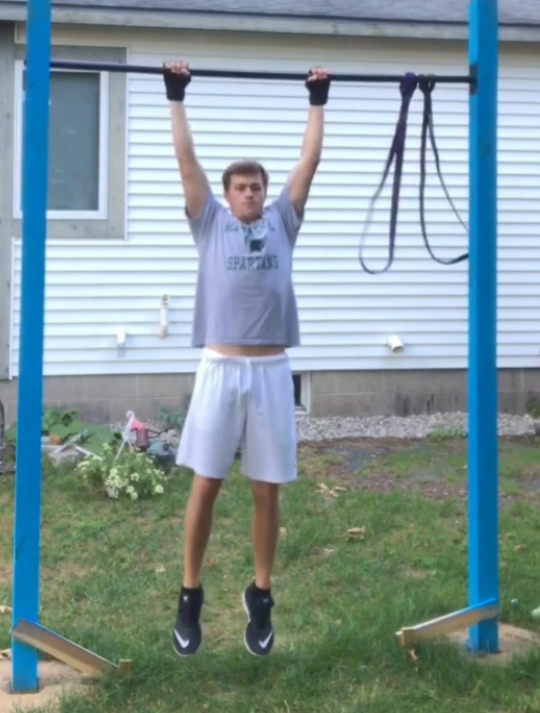
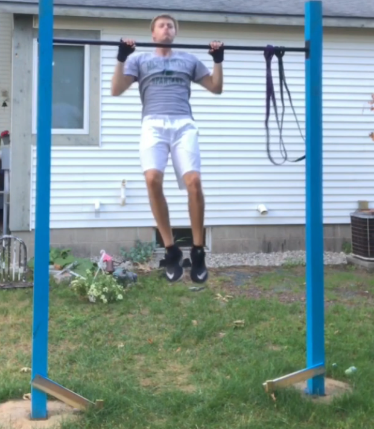
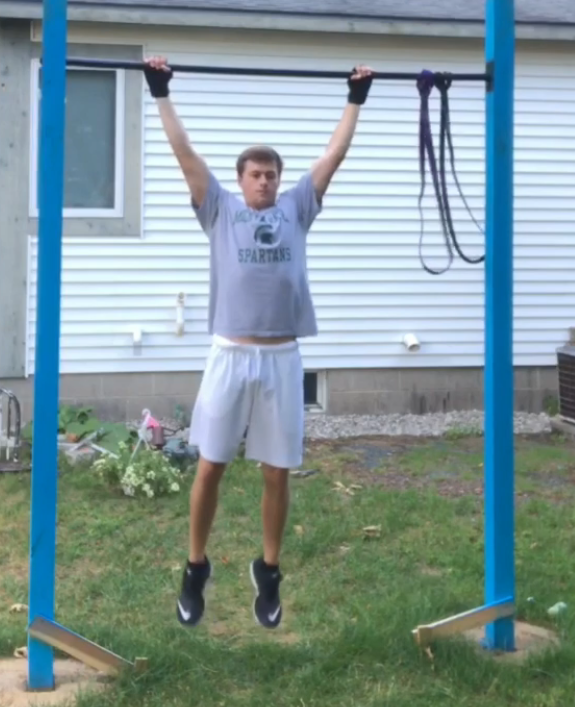
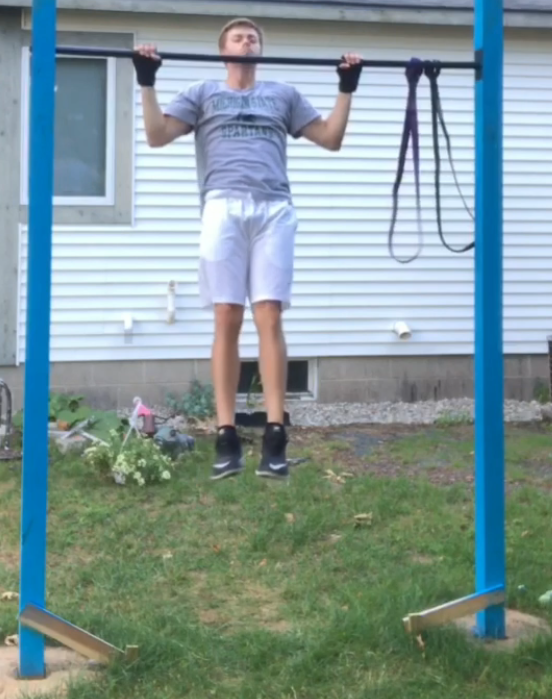

"In to Out Pull Ups" Tutorial
Tutorial Steps
|
 Step 1: Jump on to the bar with hands in a close grip position. |
 Step 2: Explode through the pullup while simultaneously moving your hands out to the normal pullup grip position. |
|
 Step 3: Control your weight down to the bottom of a pullup, locking out arms. |
 Step 4: Explode through the pullup while simultaneously moving your hands out to the wide pullup grip position. |
|
 Step 5: Control your weight down to the bottom of a pullup, locking out arms. |
 Step 6: Explode through the last wide grip pullup. |